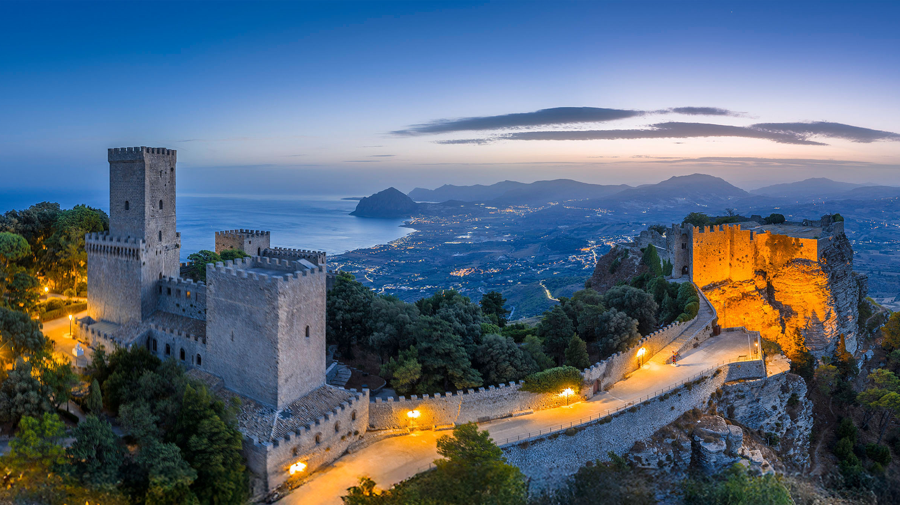

ERICE
Il borgo medievale tra le nuvole
Arroccato sulla vetta del Monte San Giuliano a 750 metri di altitudine, Erice è un dedalo di stradine acciottolate, cortili fioriti e antiche chiese. Offre una vista spettacolare che spazia dalle saline di Trapani fino al mare delle Isole Egadi.